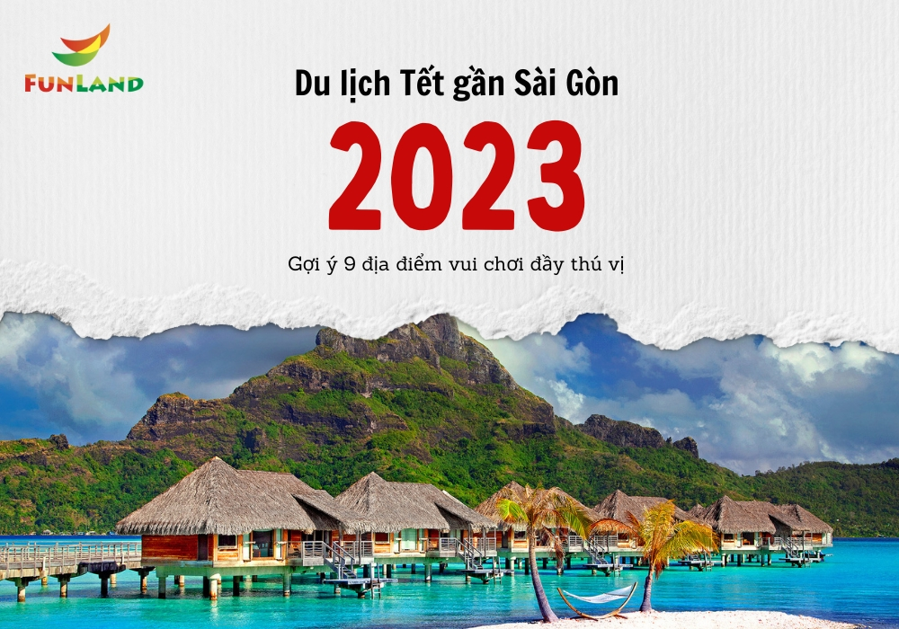
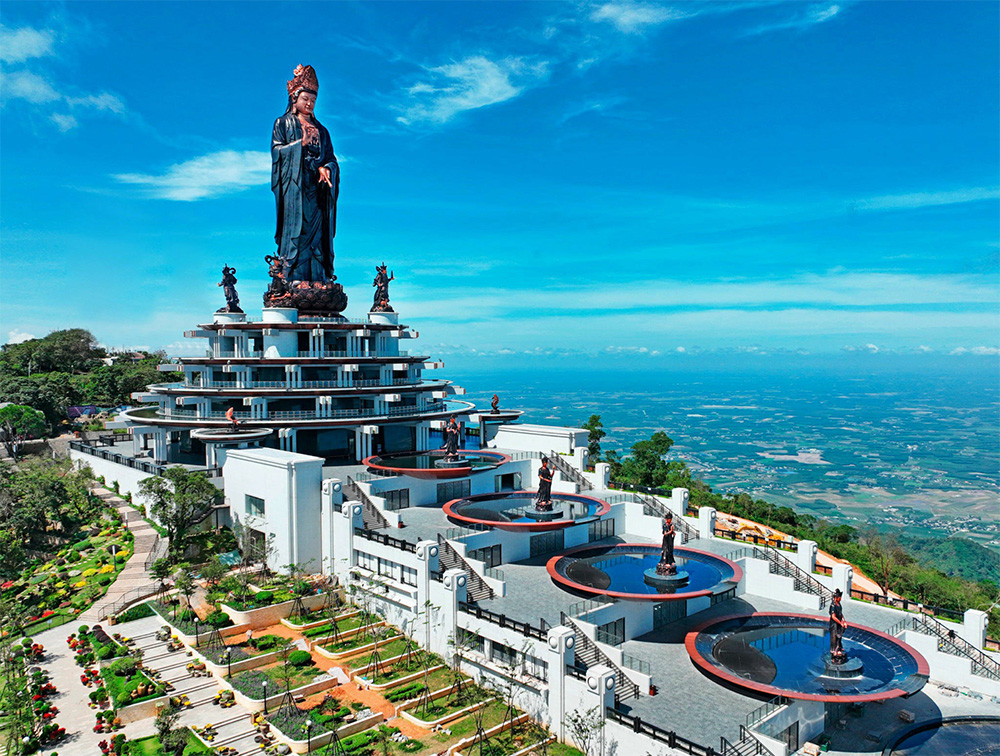
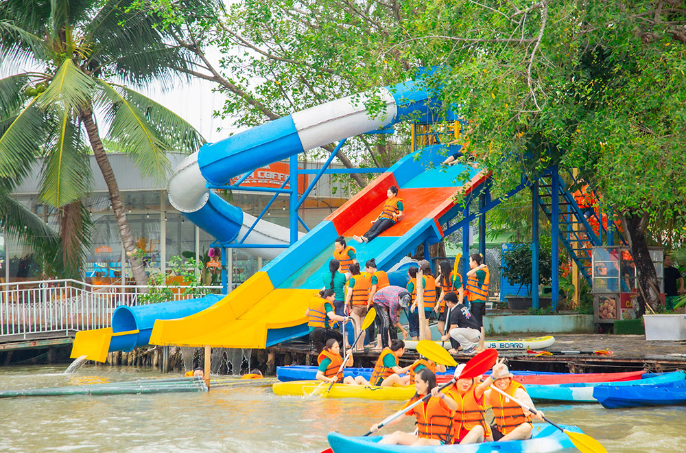
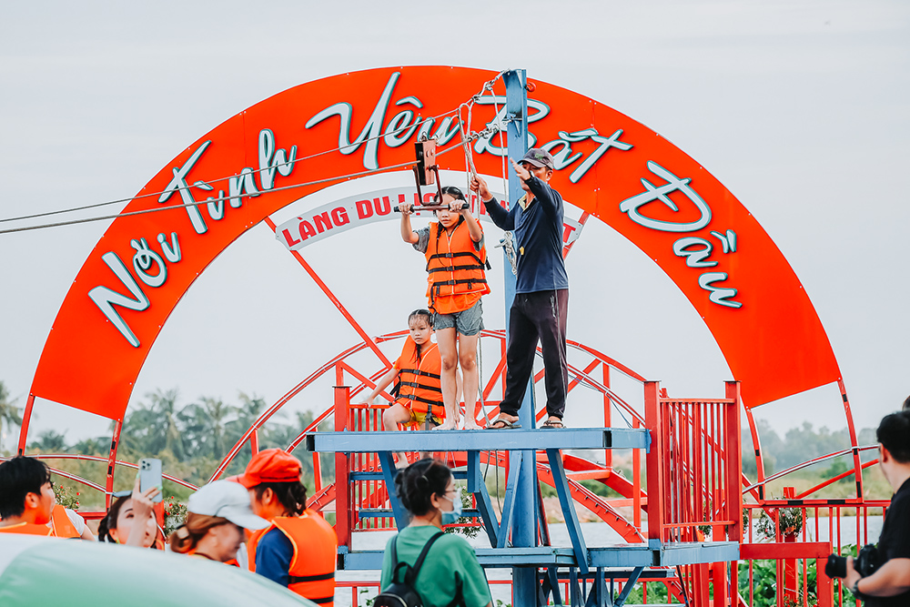
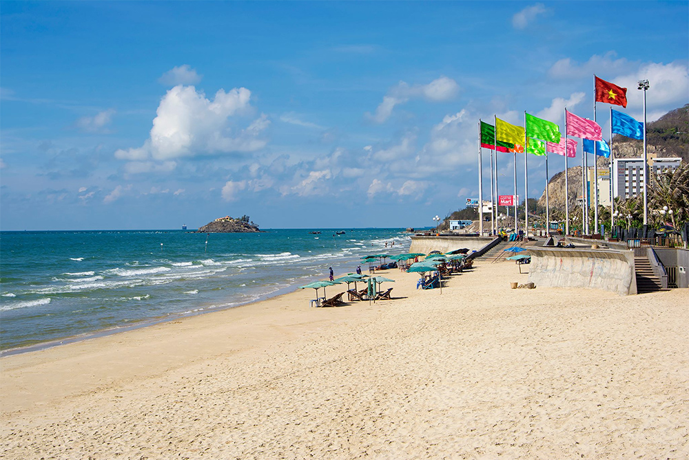
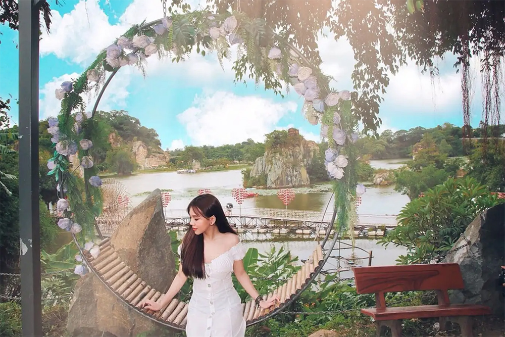
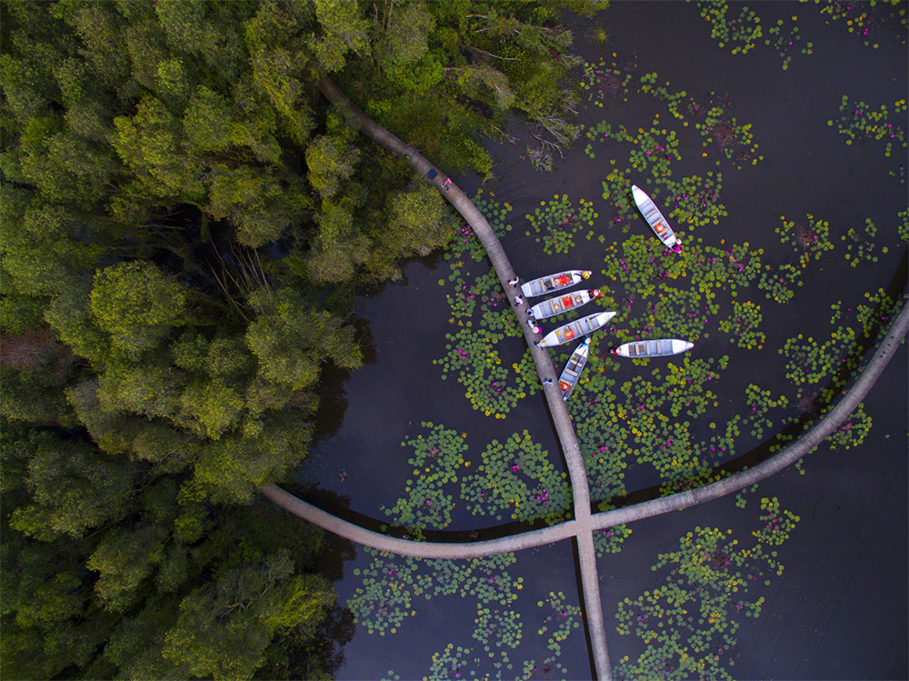
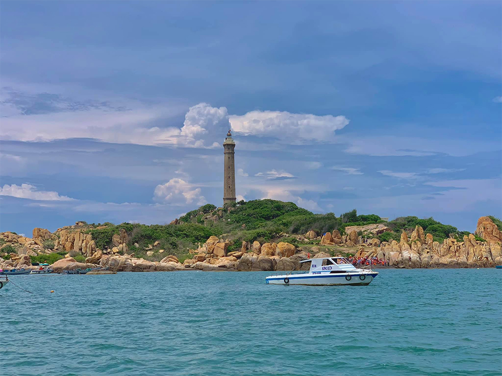
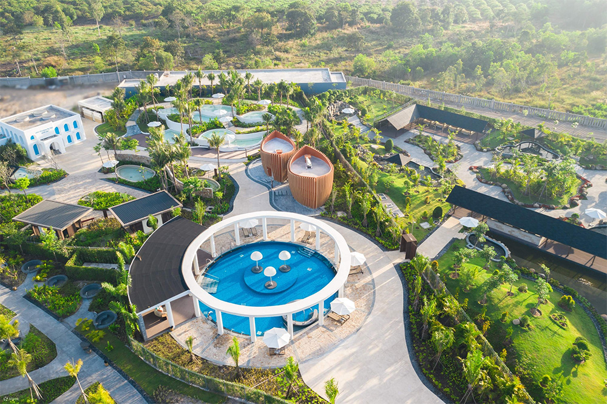
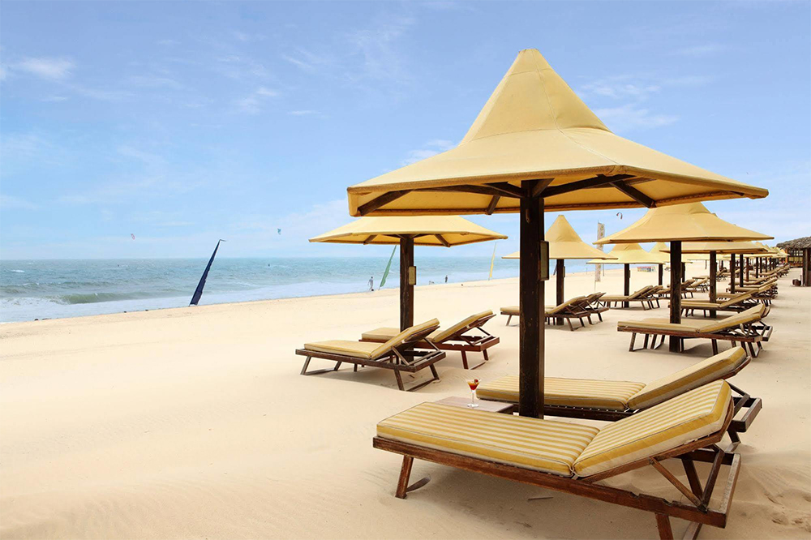

Tết đi đâu Chơi ở gần Sài Gòn – 9 Địa điểm Chơi Tết đầy Thú Vị
09/01/2023
Trong kỳ nghỉ Tết, nếu bạn quá bận rộn với những công việc “ngoài luồng”, không có nhiều thời gian đi du lịch xa thì hãy cùng Làng Tre Việt tham khảo ngay những địa điểm du lịch đáng đi ngay gần Thành phố Hồ Chí Minh cho dịp Tết Nguyên Đán sắp tới đây bạn nhé!

1. Núi Bà Đen - địa điểm du lịch Tết gần Sài Gòn
Cách trung tâm TP HCM khoảng 110km, Núi Bà Đen còn có tên gọi khá mỹ miều là Đệ Nhất Thiên. Ngọn núi cao 986m này thu hút đông đảo du khách không chỉ bởi khung cảnh thiên nhiên bốn mùa khoe sắc mà còn đa dạng hoạt động vui chơi, giải trí, cắm trại, đi bộ trekking, chiêm bái đền chùa,…

Vào những tháng âm lịch đầu năm, không khí ở núi Bà Đen có phần sôi động hơn vì đó là lúc diễn ra hội xuân núi Bà. Tới nơi đây, bạn sẽ được chiêm ngưỡng phong cảnh núi non hùng vĩ cùng nhiều ngôi chùa linh thiêng như chùa Bà Đen, động Thanh Long, động Ba Cô...
Ngoài ra, du khách cũng có thể ghé thăm các điểm gần đó như tòa thánh Tây Ninh, hồ Dầu Tiếng hoặc mua sắm tại chợ Long Hoa. Vì không cách quá xa trung tâm Sài Gòn nên bạn có thể đi về trong ngày hoặc đi 2 ngày 1 đêm.
2. Làng du lịch sinh thái Tre Việt – Funland
Làng Tre Việt toạ lạc số 25/9 ấp Phước Lương, xã Phú Hữu, huyện Nhơn Trạch, tỉnh Đồng Nai, khu du lịch chỉ cách trung tâm Tp. Hồ Chí Minh khoảng 15km nên rất thuận tiện cho bạn di chuyển, khám phá.

Với diện tích lên tới 45.000m2, tại đây có đầy đủ tiện nghi đáp ứng nhu cầu của mọi du khách. Trong đó, nổi bật là khu vực giải trí với hồ bơi, khu vui chơi trẻ em, các loại hình trò chơi nước đa dạng bậc nhất như: chèo thuyền kayak, thuyền sup, đu dây, phao bay, khinh công, phao chuối siêu tốc,…

Không chỉ nổi bật với các trò chơi hấp dẫn mà làng Tre Việt còn nổi tiếng với các món ăn ngon, mang đậm chất Nam Bộ. Có thể kể đến một số món như: cá tai tượng chiên xù, bánh khọt, chả giò, gỏi bốn mùa, gà ủ rơm, lẩu hoa Tre Việt,…
3. Biển Vũng Tàu
Cách trung tâm thành phố Hồ Chí Minh chỉ khoảng 3 tiếng lái xe, với đường bờ biển trải dài 20 km, Vũng Tàu được biết đến với nhiều bãi biển đẹp như Bãi Trước, Bãi Sau, Long Hải, hồ Cốc, hồ Tràm cùng những thắng cnahr như Tượng Đức Chúa dang tay, Thích Ca Phật Đài,... cùng nhiều hoạt động vui chơi hấp dẫn. Đây được xem là địa điểm du lịch lí tưởng vào dịp Tết cho người dân Sài Gòn.
Bên cạnh đó, các bạn có thể tham quan Tượng Đức Chúa dang tay, Thích Ca Phật Đài, thưởng thức các món ăn hải sản cũng như món bánh xèo nổi tiếng chỉ có ở Vũng Tàu.

Đến du lịch Vũng Tàu, du khách không chỉ có cơ hội khám phá vẻ đẹp thiên nhiên mà còn có thể thưởng thức nhiều món ăn đặc sắc tại đây như cháo hàu, lẩu cá đuối, gỏi cá mai, tiết canh tôm hùm, bánh xèo nổi tiếng,...
4. Khu du lịch Bửu Long
Tọa lạc ở phía Tây Biên Hòa và cách trung tâm TP.HCM khoảng 30km, khu du lịch sinh thái Bửu Long là điểm đến lý tưởng được nhiều gia đình và nhóm bạn lựa chọn. Toàn bộ khuôn viên có tổng diện tích lên tới 84ha, bao gồm nhiều sông hồ, núi non, hang động và cả các đền chùa được tôn tạo, trùng tu. Vẻ đẹp hữu tình của thiên nhiên mang đến cho nơi đây sức hấp dẫn rất riêng, tạo sự thoải mái, thư giãn cho du khách mỗi dịp ghé thăm.

Tại danh thắng Bửu Long, cụm Long Ân tọa lạc ở hướng Đông có tổng diện tích là 3.4ha, khu vực đỉnh cao nhất ở cụm núi này đạt 52m. Vùng núi này được bao quanh bởi nhiều cây xanh, phía Đông còn có chùa Long Sơn Thạch Động. Vẻ đẹp hữu tình của thiên nhiên kèm theo sự trầm mặc, cổ kính của chùa tạo nên sức hút du lịch níu chân nhiều khách tham quan.
5. Làng nổi Tân Lập, Long An
Khu du lịch làng nổi Tân Lập nằm tại huyện Mộc Hóa, tỉnh Long An cách Thành phố Hồ Chí Minh về phía Tây khoảng hơn 100km. Làng nổi Tân Lập được đầu tư xây dựng thành khu sinh thái với tổng diện tích hơn 600ha bao gồm tuyến đường xuyên rừng tràm dài 5km, tháp quan sát, khu di trú động vật hoang dã, khu nhà nổi trên cọc,… Trong đó tuyến đường xuyên rừng được xem là điểm nhấn cho toàn thể khu du lịch. Trước khi thăm thú, bạn nhớ lựa chọn khách sạn tại Long An gần làng nổi Tân Lập để tiện đi tham quan những khu vực xung quanh nữa nhé!

6. Mũi Kê Gà, Bình Thuận
Mũi Kê Gà nằm ở huyện Hàm Thuận Nam, tỉnh Bình Thuận, nếu di chuyển từ Mũi Né bạn sẽ mất khoảng nửa tiếng để vào thành phố Phan Thiết. Từ Phan Thiết bạn sẽ đi thêm khoảng 30km nữa để tới được Mũi Kê Gà. Nơi đây không phải là điểm đến quen thuộc của khách du lịch vì Mũi Kê Gà còn rất hoang sơ nhưng nhiều bạn trẻ ưa khám phá lại thích đến đây để cảm nhận khung cảnh yên bình.

Đến thăm Mũi Kê Gà thì không thể bỏ lỡ Mũi Điện nằm cách bờ không quá 500m. Ngọn hải đăng nằm trên Mũi Điện được thiết kế bởi một kỹ sư người Pháp và được nhiều người biết tới là ngọn hải đăng cổ kính, lâu đời nhất Đông Nam Á. Mặc cho các khu du lịch nghỉ dưỡng cứ mọc lên, Mũi Kê Gà vẫn giữ cho mình được nét hoang sơ bình dị của thiên nhiên vùng biển.
7. Du lịch Cần Giờ
Cách trung tâm thành phố Hồ Chí Minh chỉ 50km, huyện đảo Cần Giờ được xem là “viên ngọc quý” của du lịch sinh thái khi quy tụ hầu hết hoạt động giải trí, khám phá thiên nhiên hấp dẫn. Du khách có thể “zoom cận cảnh” hơn 1.000 cá thể khỉ trong môi trường sống tự nhiên (cẩn thận tư trang vì những người bạn hoang dã này thường xuyên thân-thiện-thái-quá đấy), mục sở thị cá sấu siêu to khổng lồ được bảo tồn từ sau Chiến Tranh Việt Nam, đi tàu cao tốc xuyên rừng ngập mặn và ngược dòng thời gian ở Rừng Sác - căn cứ cách mạng quan trọng trong lịch sử chiến đấu hào hùng của dân tộc.

Ngoài ra, Cần Giờ còn có nhiều địa điểm thú vị khác như đảo khỉ, khu du lịch Vàm Sát, lăng Cá Ông,… Đừng quên ghé qua chợ Hàng Dương để mua hải sản, bạn sẽ bị choáng váng bởi hải sản quả là đa dạng của nơi này. Mặc dù giá cả ở đây không được rẻ nhưng bù lại lại rất tươi ngon do ngư dân đánh bắt hải sản đưa về đây buôn bán.
8. Suối nước nóng Bình Châu, Bà Rịa Vũng Tàu
Suối nước nóng Bình Châu nằm ở xã Bưng Riềng, huyện Mộc Châu, tỉnh Bà Rịa – Vũng Tàu. Năm 1928, trong một chuyến đi khảo sát miền Đông Nam Bộ, một bác sĩ người Pháp đã phát hiện ra dòng suối khoáng này nhưng mãi đến đầu của thế kỷ 21 suối nước nóng Bình Châu mới được xây dựng nơi này thành khu du lịch.

Nằm giữa rừng nguyên sinh, suối nước nóng Bình Châu có hơn 70 điểm phun nước lộ thiên cùng bùn khoáng dồi dào sẽ là điểm nghỉ dưỡng giữa thiên nhiên xanh mát. Ngoài ra, suối nước nóng Bình Châu còn được tổ chức du lịch thế giới bình chọn là một trong 65 khu sinh thái bền vững của thế giới. Có rất nhiều lựa chọn nếu khách du lịch muốn tìm kiếm một khách sạn tốt khu vực Mộc Châu, Bà Rịa – Vũng Tàu.
9. Coco Beach, Phan Thiết
Khu nghỉ mát Coco Beach được thành lập vào năm 1995, là khu nghỉ mát trên bãi biển đầu tiên ở miền Nam Việt Nam, được quản lý và chăm chút bởi cặp vợ chồng người Pháp - Đức là Daniel và Jutta. Ngay từ những khoảnh khắc đầu tiên đặt chân tới du khách sẽ cảm nhận được một bãi biển riêng rộng lớn được bao bọc bởi khu vườn nhiệt đới và một hồ bơi đẹp kết hợp với 31 ngôi nhà sàn mái lá và những ngôi biệt thự.

Được thiết kế theo nội thất đương đại Việt Nam kết hợp những tiện nghi hiện đại với mùi hương của gỗ thể hiện một phong cách độc đáo phản ánh tinh thần của khu nghỉ mát riêng tư và lành mạnh.
Với những địa điểm du lịch gần TP.HCM dịp Tết mà Làng Tre Việt - Funland vừa chia sẻ, chúc bạn có những phút giây tuyệt vời khi đi du lịch trong dịp Tết Nguyên Đán sắp tới nhé!
Bài viết khác
- Bỏ Túi Ngay 25 Khu Du Lịch Sinh Thái Gần Sài Gòn Lý Tưởng Nhất Năm Nay
- 20 Địa Điểm Tổ Chức Team Building Rộng Rãi, Lý Tưởng, Gần Sài Gòn NHẤT
- Top 10 Trò Chơi Team Building Độc Đáo & Được Yêu Thích Nhất
- Team Building - Nơi gắn kết những giá trị đồng đội
- Điểm vui chơi hot sát vách Sài Gòn
- YEAR END PARTY - CÙNG NHÌN LẠI MỘT HÀNH TRÌNH